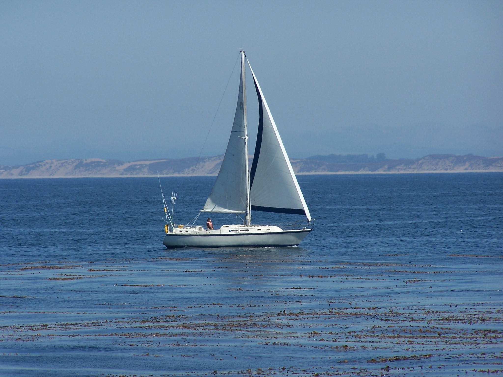
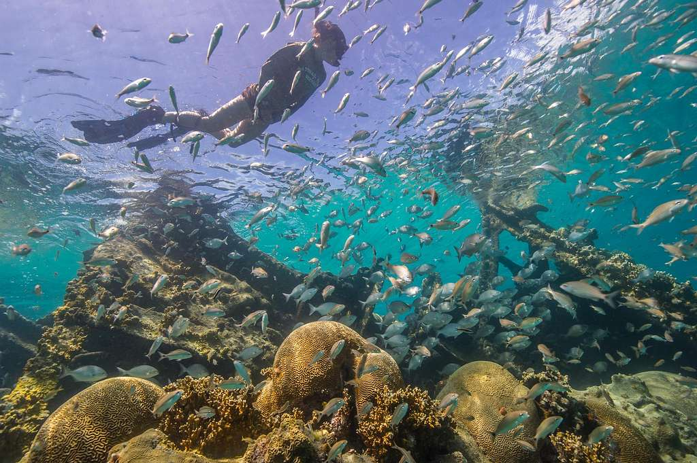
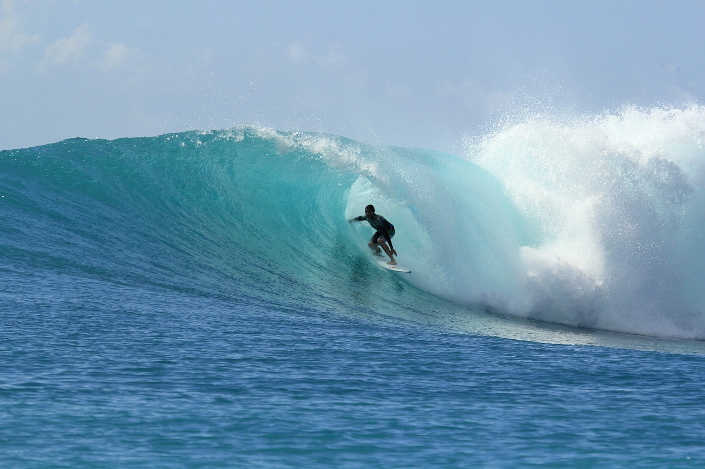
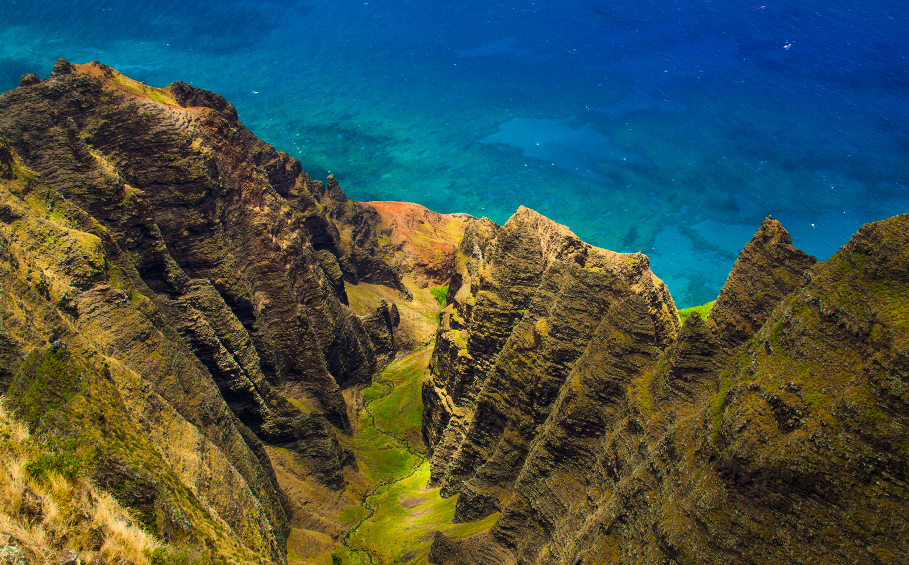

There is always something to do on Taniti! Whether you're planning a trip, or you're already here and looking to find a way to spend your time, we have plenty of things to enjoy.
Spend a day on the water! There are many local companies who offer day trips in sailboats and motorboats. Looking for a nautical vacation? Rent a boat for multiple days and enjoy the sun and sea. Don't forget your sunblock!

Taniti is an oasis and these photos only scratch the surface! Take a dive below and see the hidden wonders of our beautiful island. From fish to coral, shells and marine mammals, Taniti has adventures everywhere you look!

Calling all thrill seekers! Are you ready to catch some gnarly waves? Whether you are a beginner or an expert, these waves call to you! Our experienced surfing instructors are always here and eager to help you achieve your surfing goals. Already got this in the bag? Check out our many beaches and experience the thrill for yourself! Kowabunga and see you there!

Love the water, but want to see some incredible views from above? Look no further than the delightful mountains! Views that cameras can't replicate, animals and birds that aren't found elsewhere, unique foliage, guided tours or solo hikes- You can have it all! It's all here on the Tanitian Mountain. Race you to the top!
